ARTIFICIAL NEURAL NETWORKS
Neural Networks, Deep Learning and
Artificial Intelligence
From Artificial Neural Networks to Artifial Intelligence
Historical Background (1)
In the post-pandemic world, a lightning rise of AI, with a mess of realities and promises is impacting society.
Since ChatGPT entered the scene everybody has an experience, an opinion, or a fear on the topic.

Is it just machine learning?
Most tasks performed by AI can be described as Classification or Prediction used in applications as:
- Recommendation systems,
- Image recognition, Image generation
- Natural language processing
AI relies on machine learning algorithms, to make predictions based on large amounts of data.
AI has far-reaching implications beyond its predictive capabilities, including ethical, social or technological.
AI, ANNs and Deep learning
In many contexts, talking about AI means talking about Deep Learning (DL).
DL is a successful AI model which has powered many application such as self-driving cars, voice assistants, and medical diagnosis systems.
DL originates in the field of Artificial Neural Networks
But DL extends the basic principles of ANNs by:
- Adding complex architectures and algorithms and
- At the same time becoming more automatic
The early history of AI (1)
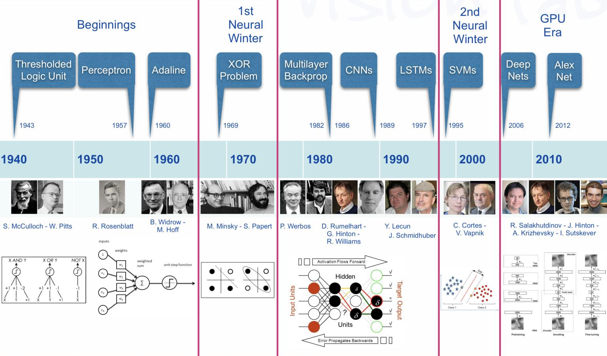Milestones in the history of DL
We can see several hints worth to account for:
The Perceptron and the first Artificial Neural Network where the basic building block was introduced.
The Multilayered perceptron and back-propagation where complex architectures were suggested to improve the capabilities.
Deep Neural Networks, with many hidden layers, and auto-tunability capabilities.
From ANN to Deep learning

Why Deep Learning Now?
Success stories
Success stories such as
the development of self-driving cars,
the use of AI in medical diagnosis, and
online shopping personalized recommendations
have also contributed to the widespread adoption of AI.
Not to talk abou the fears
AI also comes with fears from multiple sources from science fiction to religion
Mass unemployment
Loss of privacity
AI bias
AI fakes
Or, simply, AI takeover
Back to science
Where/How does it all fit?

AI, ML, DL …
Artificial intelligence: Ability of a computer to perform tasks commonly associated with intelligent beings.
Machine learning: study of algorithms that learn from examples and experience instead of relying on hard-coded rules and make predictions on new data
Deep learning: sub field of ML focusing on learning data representations as successive successive layers of increasingly meaningful representations.
How does DL improve on ML
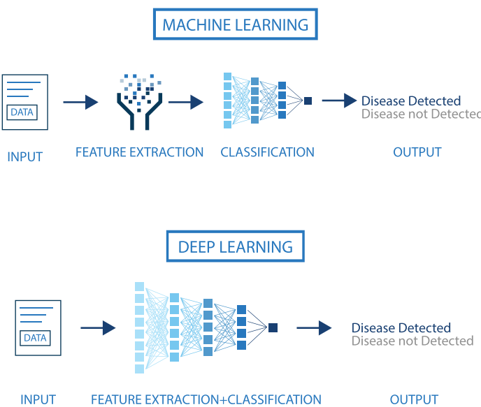Size does matter!

An illustration of the performance comparison between deep learning (DL) and other machine learning (ML) algorithms, where DL modeling from large amounts of data can increase the performance
The impact of Deep learning
Near-human-level image classification
Near-human-level speech transcription
Near-human-level handwriting transcription
Dramatically improved machine translation
Dramatically improved text-to-speech conversion
Digital assistants such as Google Assistant and Amazon Alexa
Near-human-level autonomous driving
Improved ad targeting, as used by Google, Baidu, or Bing
Improved search results on the web
Ability to answer natural language questions
Superhuman Go playing
Not all that glitters is gold …
According to F. Chollet, the developer of Keras,
- “we shouldn’t believe the short-term hype, but should believe in the long-term vision.
- It may take a while for AI to be deployed to its true potential—a potential the full extent of which no one has yet dared to dream
- but AI is coming, and it will transform our world in a fantastic way”.
The Artificial Neurone
Emulating biological neurons

- The first model of an artifial neurone was proposed by Mc Cullough & Pitts in 1943
Mc Cullough’s neuron
- It may be divided into 2 parts.
- The first part, \(g\),takes an input (as the dendrites of a neuron would do),
- It performs an aggregation and
- based on the aggregated value the second part, \(f\), makes a decision.
- See this link for an explanation on how it can emulate logical operations such as AND, OR or NOT, but not XOR.
- See this link for a nice clarifying example
Limitations
This first attempt to emulate neurons succeeded but with limitations:
What about non-Boolean (say, real) inputs?
What if all inputs are not equal?
What if we want to assign more importance to some inputs?
What about functions which are not linearly separable? Say XOR function
Overcoming the limitations
To overcome these limitations Rosenblatt, proposed the perceptron model, or artificial neuron, in 1958.
Generalizes McCullough-Pitts neuron in that weights and thresholds can be learnt over time.
- It takes a weighted sum of the inputs and
- It sets the output to iff the sum is more than an arbitrary threshold (\(\theta\)).
Rosenblatt’s perceptron

Rosenblatt’s perceptron
- Instead of hand coding the thresholding parameter \(\theta\),
- It is added as one of the inputs, with the weight \(w_0=-\theta\).

Comparison between the two

Comparison between the two
The Perceptron represents an improvement over McCullough-Pitts’ neuron:
- It admits real-valued inputs.
- Both weights and the threshold can be learned.
However, there are still limitations:
- The output is determined by a step function, which limits its ability to model complex relationships.
- A single perceptron can only classify linearly separable functions.
ANs and Activation Functions
The Perceptron can be generalized by Artificial Neurones which can use more general functions, called Activation Functions to produce their output.
- Activation functions are built in a way that they allow neurons to produce continuous and non-linear outputs.
It must be noted however that a single artificial neurone, even with a different activation function, still cannot model no-linear separable problems like XOR.
Activation in biological neurons
- Biological neurons are specialized cells that transmit signals to communicate with each other.
- Neuron’s activation is based on releasing neurotransmitters, chemicals that transmit signals between nerve cells.
- When the signal reaching the neuron exceeds a certain threshold, it releases neurotransmitters to continue the communication process.
Activation functions in AN
- Analogously, activation functions in AN are functions to decide if the AN it is activated or not.
- AN’s activation function is a mathematical function applied to the neuron’s input to produce an output.
- In practice it may go from simple to complex functions that can learn patterns in the data.
- Activation functions can incorporate non-linearity, improving over linear classifiers.
Activation function

Artificial Neuron
With all these ideas in mind we can now define an Artificial Neuron as a computational unit that :
takes as input \(x=(x_0,x_1,x_2,x_3),\ (x_0 = +1 \equiv bias)\),
outputs \(h_{\theta}(x) = f(\theta^\intercal x) = f(\sum_i \theta_ix_i)\),
where \(f:\mathbb{R}\mapsto \mathbb{R}\) is called the activation function.
Activation functions
Goal of activation function is to provide the neuron with the capability of producing the required outputs.
Flexible enough to produce
- Either linear or non-linear transformations.
- Output in the desired range ([0,1], {-1,1}, \(\mathbb{R}^+\)…)
Usually chosen from a (small) set of possibilities.
- Sigmoid function
- Hyperbolic tangent, or
tanh, function - ReLU
The sigmoid function
\[ f(z)=\frac{1}{1+e^{-z}} \]
Output real values \(\in (0,1)\).
Natural interpretations as probability
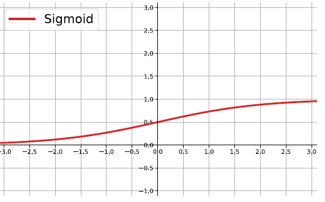

the hyperbolic tangent
Also called tanh, function:
\[ f(z)=\frac{e^{z}-e^{-z}}{e^{z}+e^{-z}} \]
outputs are zero-centered and bounded in −1,1
scaled and shifted Sigmoid
stronger gradient but still has vanishing gradient problem
Its derivative is \(f'(z)=1-(f(z))^2\).

The ReLU
rectified linear unit: \(f(z)=\max\{0,z\}\).
Close to a linear: piece-wise linear function with two linear pieces.
Outputs are in \((0,\infty)\) , thus not bounded
Half rectified: activation threshold at 0
No vanishing gradient problem

More activation functions
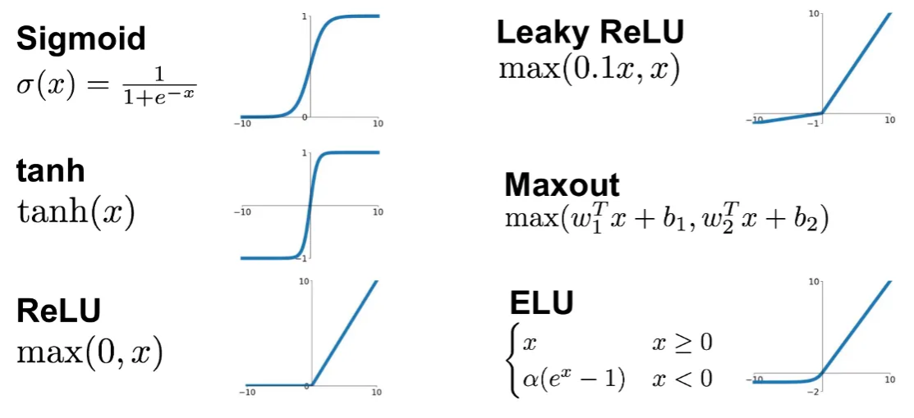.
Softmax Activation Function
Softmax is an activation function used in the output layer of classification models, especially for multi-class problems.
It converts raw scores (logits) into probabilities, ensuring that \(\sum_{i=1}^{N} P(y_i) = 1\) where \(P(y_i)\) is the predicted probability for class \(i\).
Given an input vector \(z\), Softmax transforms it as: \[ \sigma(z_i) = \frac{e^{z_i}}{\sum_{j=1}^{N} e^{z_j}} \]
- The exponentiation amplifies differences, making the highest value more dominant.
- The normalization ensures that probabilities sum to 1.
The Artificial Neuron in Short
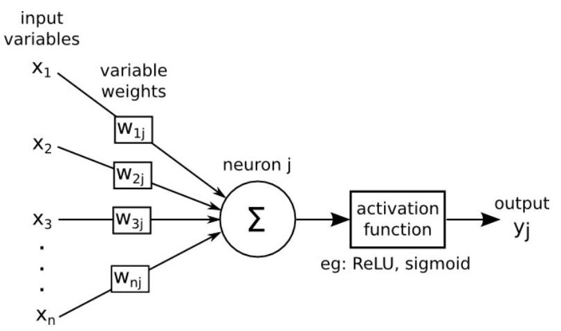The Artificial Neuron in Short
An AN takes a vector of input values \(x_{1}, \ldots, x_{d}\) and combines it with some weights that are local to the neuron \(\left(w_{0}, w_{1}, . ., w_{d}\right)\) to compute a net input \(w_{0}+\sum_{i=1}^{d} w_{i} \cdot x_{i}\).
To compute its output, it then passes the net input through a possibly non-linear univariate activation function \(g(\cdot)\), usually chosen from a set of options such as Sigmoid, Tanh or ReLU functions
To deal with the bias, we create an extra input variable \(x_{0}\) with value always equal to 1 , and so the function computed by a single artificial neuron (parameterized by its weights \(\mathbf{w}\) ) is:
\[ y(\mathbf{x})=g\left(w_{0}+\sum_{i=1}^{d} w_{i} x_{i}\right)=g\left(\sum_{i=0}^{d} w_{i} x_{i}\right)=g\left(\mathbf{w}^{\mathbf{T}} \mathbf{x}\right) \]
Perceptron Learning Rule
The Perceptron Rule updates weights based on misclassified samples.
It ensures convergence only if data is linearly separable.
Weight Update Formula \[ w_j \leftarrow w_j + \eta(y - \hat{y})x_j \] where:
\(x_j\) = input feature; \(\quad \eta\) = learning rate;
\(y\) = true label; \(\quad \hat{y}\)=predicted class (\(\pm1\));
Key Features
- Uses a step function (not differentiable).
- Cannot be optimized using gradient descent.
- Fails to converge if data is not linearly separable.
The Perceptron Decision Rule
The Delta Rule
Uuses gradient descent to minimize the Sum of Squared Errors (SSE).
It applies to models with differentiable activation functions.
Weight Update Formula \[ w_j \leftarrow w_j + \eta(y - h(x))x_j \] where:
\(x_j\) = input feature, \(\eta\) = learning rate;
\(y\) = true label; \(\quad h(x) =\) predicted output.
Key Features
- Works with continuous activation functions (e.g., linear in ADALINE).
- Not limited to linearly separable problems.
- Forms the foundation for gradient-based learning in neural networks.
The Delta Rule
From neurons to neural networks
The basic neural network
Following with the brain analogy one can combine (artificial) neurons to create better learners.
A simple artificial neural network is usually created by combining two types of modifications to the basic perceptron (AN).
Stacking several neurons insteads of just one.
Adding an additional layer of neurons, which is call a hidden layer,
This yields a system where the output of a neuron can be the input of another in many different ways.
An Artificial Neural network

The architecture of ANN
In this figure, we have used circles to also denote the inputs to the network.
Circles labeled +1 are bias units, and correspond to the intercept term.
The leftmost layer of the network is called the input layer.
The rightmost layer of the network is called the output layer.
The middle layer of nodes is called the hidden layer, because its values are not observed in the training set.
Bias nodes are not counted when stating the neuron size.
With all this in mind our example neural network has three layers with:
- 3 input units (not counting the bias unit),
- 3 hidden units,
- 1 output unit.
How an ANN works
An ANN is a predictive model (a learner) whose properties and behaviour can be well characterized.
It operates through a process known as forward propagation, which encompasses the information flow from the input layer to the output layer.
Forward propagation is performed by composing a series of linear and non-linear (activation) functions.
These are characterized (parametrized) by their weights and biases, that need to be learnt.
- This is done by training the ANN.
Training the ANN
The training process aims at finding the best possible parameter values for the learning task defined by the fnctions. This is done by
- Selecting an appropriate (convex) loss function,
- Finding weights that minimize the total cost function (avg. loss).
This is usually done using some iterative optimization procedure such as gradient descent.
- This requires evaluating derivatives in a huge number of points.
- Such high number may be reduced by Stochastic Gradient Descent.
- The evaluation of derivatives is simplified thanks to Backpropagation.
Forward propagation
The process that encompasses the computations required to go from the input values to the final output is known as forward propagation.
For the ANN with 3 input values and 3 neurons in the hidden layer we have:
- Each node, \(a_i^{(2)}\) of the hidden layer opperates on all nodes of the input values
\[\begin{eqnarray} a_1^{(2)}&=&f(\theta_{10}^{(1)}+\theta_{11}^{(1)}x_1+\theta_{12}^{(1)}x_2+\theta_{13}^{(1)}x_3)\\ a_2^{(2)}&=&f(\theta_{20}^{(1)}+\theta_{21}^{(1)}x_1+\theta_{22}^{(1)}x_2+\theta_{23}^{(1)}x_3)\\ a_3^{(2)}&=&f(\theta_{30}^{(1)}+\theta_{31}^{(1)}x_1+\theta_{32}^{(1)}x_2+\theta_{33}^{(1)}x_3)) \end{eqnarray}\]
- Output of hidden layer is transformed by the activation function:
\[ h_{\Theta}(x)=a_1^{(3)}=f(\theta_{10}^{(2)}+\theta_{11}^{(2)}a_1^{(2)}+\theta_{12}^{(2)}a_2^{(2)}+\theta_{13}^{(2)}a_3^{(2)} \]
A compact notation (1)
Let \(z_i^{(l)}\) denote the total weighted sum of inputs to unit \(i\) in layer \(l\):
\[ z_i^{(2)}=\theta_{i0}^{(1)}+\theta_{i1}^{(1)}x_1+\theta_{i2}^{(1)}x_2+\theta_{i3}^{(1)}x_3, \] the output becomes: \(a_i^{(l)}=f(z_i^{(l)})\).
Extending the activation function \(f(\cdot)\) to apply elementwise to vectors:
\[ f([z_1,z_2,z_3]) = [f(z_1), f(z_2),f(z_3)], \] we can write the previous equations more compactly as:
\[\begin{eqnarray} z^{(2)}&=&\Theta^{(1)}x\nonumber\\ a^{(2)}&=&f(z^{(2)})\nonumber\\ z^{(3)}&=&\Theta^{(2)}a^{(2)}\nonumber\\ h_{\Theta}(x)&=&a^{(3)}=f(z^{(3)})\nonumber \end{eqnarray}\]A compact notation (2)
More generally, recalling that we also use \(a^{(1)}=x\) to also denote the values from the input layer,
Given layer \(l\)’s activations \(a^{(l)}\), we can compute layer \(l+1\)’s activations \(a^{(l+1)}\) as:
\[\begin{equation} z^{(l+1)}=\Theta^{(l)}a^{(l)} \label{eqforZs} \end{equation}\]
\[\begin{equation} a^{(l+1)}=f(z^{(l+1)}) \label{eqforAs} \end{equation}\]
A compact notation (3)
This can be used to provide a matrix representation for the weighted sum of inputs of all neurons:
\[ z^{(l+1)}= \begin{bmatrix} z_1^{(l+1)}\\ z_2^{(l+1)}\\ \vdots\\ z_{s_{l+1}}^{(l)} \end{bmatrix}= \begin{bmatrix} \theta_{10}^{(l)}& \theta_{11}^{(l)}&\theta_{12}^{(l)}&...&\theta_{1s_{l}}^{(l)}&\\ \theta_{20}^{(l)}& \theta_{21}^{(l)}&\theta_{22}^{(l)}&...&\theta_{2s_{l}}^{(l)}&\\ \vdots & \vdots& \vdots & \vdots & \vdots\\ \theta_{s_{l+1}0}^{(l)}& \theta_{s_{l+1}1}^{(l)}&\theta_{s_{l+1}2}^{(l)}&...&\theta_{s_{l+1}s_{l}}^{(l)}&\\ \end{bmatrix} \cdot\begin{bmatrix} 1\\ a_1^{(l)}\\ a_2^{(l)}\\ \vdots\\ a_{s_l}^{(l)} \end{bmatrix} \]
A compact notation (4)
So that, the activation is then:
\[ a^{(l+1)}= \begin{bmatrix} a_1^{(l+1)}\\ a_2^{(l+1)}\\ \vdots\\ a_{s_{l+1}}^{(l)} \end{bmatrix}=f(z^{(l+1)})=\begin{bmatrix} f(z_1^{(l+1)})\\ f(z_2^{(l+1)})\\ \vdots\\ f(z_{s_{l+1}}^{(l)}) \end{bmatrix} \]
Eficient Forward propagation
The way input data is transformed, through a series of weightings and transformations, until the ouput layer is called forward propagation.
By organizing parameters in matrices, and using matrix-vector operations, fast linear algebra routines can be used to perform the required calculations in a fast efficent way.
Multiple architectures for ANN
We have so far focused on a single hidden layer neural network of the example.
One can. however build neural networks with many distinct architectures (meaning patterns of connectivity between neurons), including ones with multiple hidden layers.
Multiple architectures for ANN
We have so far focused on a single hidden layer neural network of the example
One can build neural networks with many distinct architectures (meaning patterns of connectivity between neurons), including ones with multiple hidden layers.

Multiple layer dense Networks
- Most common choice is a \(n_l\)-layered network:
- layer 1 is the input layer,
- layer \(n_l\) is the output layer,
- and each layer \(l\) is densely connected to layer \(l+1\).
- In this setting, to compute the output of the network, we can compute all the activations in layer \(L_2\), then layer \(L_3\), and so on, up to layer \(L_{nl}\), using equations seen previously.
Feed Forward NNs
- The type of NN described is called feed-forward neural network (FFNN), since
- All computations are done by Forward propagation
- The connectivity graph does not have any directed loops or cycles.
Training Neural Networks
Training an ANN
An ANN is a predictive model whose properties and behaviour can be mathematically characterized.
In practice this means:
- The ANN acts by composing a series of linear and non-linear (activation) functions.
- These are characterized by their weights and biases, that need to be learnt.
Training the network is done by
- Selecting an appropriate (convex) loss function,
- Finding weights that minimize a the total cost function (avg loss).
Training an ANN
The tools for training
Training an ANN is usually done using some iterative optimization procedure such as Gradient Descent.
This requires evaluating derivatives in a huge number of points.
- Such high number may be reduced by Stochastic Gradient Descent.
- The evaluation of derivatives is simplified thanks to Backpropagation.
Loss functions for optimization
Depending on the activation function it may be advisable to use one or another form of loss function.
A typical choice may be quadratic (or square) error loss: \[ l(h_\theta(x),y)=\left (y-\frac{1}{1+e^{-\theta^\intercal x}}\right )^2 \]
Given a sigmoid AF, the squared error loss is not a convex problem so that MSE is not appropriate.
Quadratic loss may be used with ReLu activation.
Cross-entropy loss function
- A common loss function to use with ANNs is Cross-entropy defined as:
\[ l(h_\theta(x),y)=\big{\{}\begin{array}{ll} -\log h_\theta(x) & \textrm{if }y=1\\ -\log(1-h_\theta(x))& \textrm{if }y=0 \end{array} \]
- This function can also be written as:
\[ l(h_\theta(x),y)=-y\log h_\theta(x) - (1-y)\log(1-h_\theta(x)) \]
- Using cross-entropy loss, the cost function is of the form:
\[ J(\theta)=-\frac{1}{n}\left[\sum_{i=1}^n (y^{(i)}\log h_\theta(x^{(i)})+ (1-y^{(i)})\log(1-h_\theta(x^{(i)}))\right] \]
- Now, this is a convex optimization problem.
The parameters for tuning
Training a network corresponds to finding the parameters, that is, the weights and the biases, that minimize the cost function.
Althoug weights & biases are respectively matrices and vectors, it is convenient to represent them in a vectorized form stored as a single vector, that will be denoted here, by \(\theta\).
We may suppose \(\theta\in\mathbb{R}^p\), and write the cost function as \(J(\theta)\) to emphasize its dependence on the parameters, that is: \[ \begin{eqnarray*} J: \mathbb{R}^p & \rightarrow \mathbb{R}\\ \theta & \rightarrow J(\theta) \end{eqnarray*} \]
Gradient or Steepest Descent
A classical method in optimization to minimize a convex function \(J(\theta)\).
It proceeds iteratively, computing a sequence of vectors \(\theta^1, \theta^2, ..., \theta^n\) in \(\mathbb{R}^p\) with the aim of converging to a vector that minimizes the cost function.
Gradient Descent
Suppose that our current vector is \(\theta\). How should we choose a perturbation, \(\Delta\theta\), so that the next vector, \(\theta+\Delta\theta\), represents an improvement, that is: \(J(\theta +\Delta\theta) < J(\theta)\)?
Linearize the cost function using a Taylor approximation.
If \(\Delta\theta\) is small, then ignoring terms of order \(||\Delta\theta||^2\) or higher: \[ J(\theta+\Delta\theta)\approx J(\theta)+\sum_{i=1}^p\frac{\partial J(\theta)}{\partial\theta_i}\Delta\theta_i \] or, equivalently: \[\begin{equation}\label{g2} J(\theta+\Delta\theta)\approx J(\theta)+\nabla J(\theta)^\intercal\Delta\theta \end{equation}\] where \(\nabla J(\theta)\in\mathbb{R}^p\) denote the gradient, i.e. the vector of partial derivatives: \[\begin{equation}\label{g1} \nabla J(\theta)=\left(\frac{\partial J(\theta)}{\partial\theta_1},...,\frac{\partial J(\theta)}{\partial\theta_p}\right)^\intercal \end{equation}\]
Gradient Descent
Goal: choose a perturbation, \(\Delta\theta\), s.t.: \(J(\theta +\Delta\theta) < J(\theta)\)
Taylor approximation above suggests that choosing \(\Delta\theta\) to make \(\nabla J(\theta)^\intercal\Delta\theta\) negative will make the value of \(J(\theta+\Delta\theta)\) smaller.
Indeed it can be shown that the highest possible negative value will come out when \(-\nabla J(\theta)=\Delta\theta\), which leads to the gradient descent formula: \[ \theta \rightarrow \theta-\eta\nabla J(\theta), \] where \(\eta\), the learning rate is the size of the step taken at each iteration, which should be small because of Taylor App.
The Cauchy-Schwarz inequality and Gradient Descent
The Cauchy-Schwarz inequality, states that for any \(f,g\in\mathbb{R}^p\), we have: \[ |f^\intercal g|\leq ||f||\cdot ||g||. \]
Moreover, the two sides are equal if and only if \(f\) and \(g\) are linearly dependent (meaning they are parallel).
By Cauchy-Schwarz,biggest possible value for \(\nabla J(\theta)^\intercal\Delta\theta\) is the upper bound, \(||\nabla J(\theta)||\cdot ||\Delta\theta||\).
- The equality is only reached when \(||\nabla J(\theta)||= ||\Delta\theta||\)
This explains why we choose precisely \(-\nabla J(\theta)=\Delta\theta\)
Gradient Descent
In summary, givent a cost function \(J(\theta)\) to be optimized the gradient descent optimization proceeds as follows:
- Initialize \(\theta_0\) randomly or with some predetermined values
- Repeat until convergence: \[ \theta_{t+1} = \theta_{t} - \eta \nabla J(\theta_{t}) \]
- Stop when: \(|J(\theta_{t+1}) - J(\theta_{t})| < \epsilon\)
- \(\theta_0\) is the initial parameter vector,
- \(\theta_t\) is the parameter vector at iteration \(t\),
- \(\eta\) is the learning rate,
- \(\nabla J(\theta_{t})\) is the gradient of the loss function with respect to \(\theta\) at iteration \(t\),
- \(\epsilon\) is a small positive value indicating the desired level of convergence.
Gradient descent Illustration
- Gradient descent is an intuitiva approach that has been thoroughly illustrated in many different ways:

https://assets.yihui.org/figures/animation/example/grad-desc
Computing Gradients
- The gradient method optimizes weights and biases \(\theta =\{W, b\}\) by minimizing the cost function \(J(\theta)\).
- This requires computing partial derivatives: \[ \frac{\partial}{\partial\theta_j}J(\theta) \]
- The algorithm used for this computation is called backpropagation.
A short history
- Introduced in the 1970s in an MSc thesis.
- In 1986, Rumelhart, Hinton, and Williams demonstrated that backpropagation significantly improves learning speed.
- This breakthrough enabled neural networks to solve previously intractable problems.
Backpropagation intuition
- The term originates from error backpropagation.
- An artificial neural network computes outputs through forward propagation:
- Input values pass through linear and non-linear transformations.
- The network produces a prediction.
- The error (difference between predicted and true value) is:
- Propagated backward to compute the error contribution of each neuron.
- Used to adjust weights iteratively.
Delta rule and error term \(\delta\)
- The delta rule updates weights based on the error term \(\delta_j\), which measures how much neuron \(j\) contributes to the error.
- It is computed as: \[
\delta_j = \sigma^{\prime}(z_j) (c_j - y_j)
\] where:
- \(\sigma^{\prime}(z_j)\) is the derivative of the activation function.
- \((c_j - y_j)\) is the error in neuron \(j\).
Weight update \(\Delta W\)
- Once \(\delta_j\) is computed, weights are updated using: \[
\Delta w_{i}^{j} = \eta \delta_j x_{i}^{j}
\] where:
- \(\eta\) is the learning rate.
- \(\delta_j\) determines the direction and magnitude of the update.
- \(x_{i}^{j}\) is the input to neuron \(j\).
- In hidden layers, \(\delta\) is propagated backward: \[ \delta_k = \sigma^{\prime}(z_k) \sum_{j \in S_k} \delta_j w_k^j \] where \(S_k\) is the set of output neurons connected to neuron \(k\).
Backpropagation algorithm
- Forward propagation
- Compute the network output for a given input.
- Backward propagation
- Compute \(\delta_j\) for each neuron in the output layer.
- Propagate \(\delta_j\) backward to compute \(\delta_k\) for hidden layers.
- Update weights using gradient descent.
Final algorithm
Input: \(W\) (weight vectors), \(D\) (training dataset).
Repeat until error is below threshold:
Compute network output for each training instance.
For each neuron \(j\) in the output layer:
Compute \(\delta_j = \sigma^{\prime}(z_j) (c_j - y_j)\)
Update weights: \(\Delta w_i^j = \eta \delta_j x_i^j\)
For each neuron \(k\) in hidden layers:
Compute \(\delta_k = \sigma^{\prime}(z_k) \sum_{j \in S_k} \delta_j w_k^j\)
Update weights : \(\Delta w_i^k = \eta \delta_k x_i^k\)
Output: Updated weight vectors \(W\).
Chain rule in backpropagation
In multi-layer networks, the error signal must be propagated backward through multiple layers.
The weight update in hidden layers depends not only on the local error but also on how errors propagate from the output layer.
This is achieved using the chain rule of calculus, which decomposes derivatives into simpler components.
That is, the gradient descent update rule for the weight is:
\[ \Delta w_i^j = -\eta \frac{\partial J}{\partial w_{i}^{j}} = \eta \delta_j x_i^j \] where the derivative will be computed applying the chain rule.
Applying the chain rule
- To compute the gradient of the loss function \(J\) with respect to a weight \(w_{i}^{j}\) connecting neuron \(i\) to neuron \(j\), we use the chain rule:
\[ \frac{\partial J}{\partial w_{i}^{j}} = \frac{\partial J}{\partial y_j} \cdot \frac{\partial y_j}{\partial z_j} \cdot \frac{\partial z_j}{\partial w_{i}^{j}} \]
- \(\frac{\partial J}{\partial y_j}\) measures how the loss changes with respect to the output of neuron \(j\).
- \(\frac{\partial y_j}{\partial z_j} = \sigma^{\prime}(z_j)\) is the derivative of the activation function.
- \(\frac{\partial z_j}{\partial w_{i}^{j}} = x_i^{j}\) represents the input to the neuron.
Automatic differentiation
Modern deep learning frameworks do not compute gradients manually.
Instead, they use automatic differentiation and computational graphs to simplify and speed up backpropagation.
A computational graph represents the sequence of operations in a neural network as a directed graph.
- Each node corresponds to an operation (e.g., addition, multiplication, activation function).
- This structure allows efficient backpropagation by applying the chain rule automatically.
Automatic differentiation (AD) relies the computational graph to apply the chain rule and compute gradients automatically in the Backwards pass.
Frameworks like TensorFlow, PyTorch, and JAX use reverse-mode differentiation, which is particularly efficient for functions with many parameters (like neural networks).
Tuning a Neural Network


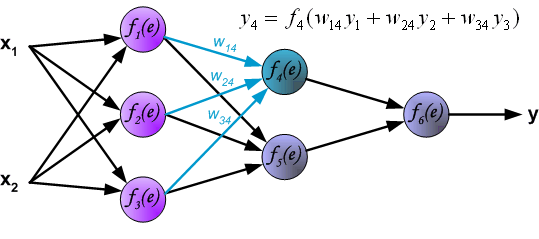
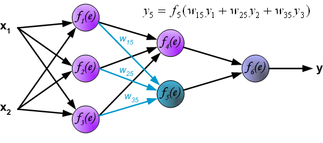

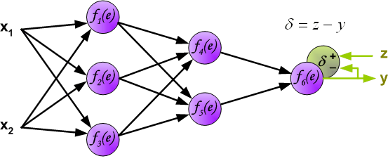


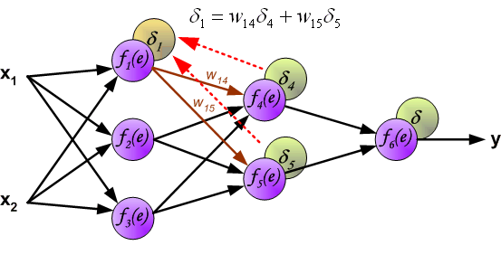


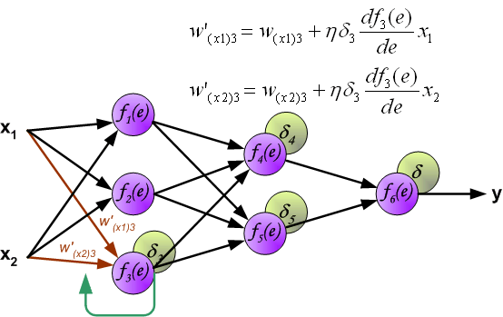

Improving the learning process
Learning optimization
The learning porocess such as it has been derived may be improved in different ways.
- Predictions can be be bad and require improvement.
- Computations may be inefficent or slow.
- The network may overfit and lack generalizability.
This can be partially soved applying distinct approaches.
Network architechture
Network performance is affected by many hyperparameters
- Network topology
- Number of layers
- Number of neurons per layer
- Activation function(s)
- Weights initialization procedure
- etc.
Hyperparameter tuning
- Hyperparameters selection and tuning may be hard, due simply to dimensionality.
- Standard approaches to search for best parameters combinations are used.
How many (hidden) layers
Traditionally considered that one layer may be enough
- Shallow Networks
Posterior research showed that adding more layers increases efficency
- Number of neurons per layer decreases exponentially
Although there is also risk of overfitting
Epochs and iterations
It has been shown that using the whole training set only once may not be enough for training an ANN.
One iteration of the training set is known as an epoch.
The number of epochs \(N_E\), defines how many times we iterate along the whole training set.
\(N_E\) can be fixed, determined by cross-validation or left open and stop the training when it does not improve anymore.
Iterations and batches
A complementary strategy to increasing the number of epochs is decreasing the number of instances in each iteration.
That is, the training set is broken in a number of batches that are trained separately.
Batch learning allows weights to be updated more frequently per epoch.
The advantage of batch learning is related to the gradient descent approach used.
Training in batches
Improving Gradient Descent
- Training deep neural networks involves millions of parameters and large datasets.
- Computing the full gradient in every iteration is computationally expensive because:
- It requires summing over all training points.
- The cost grows linearly with dataset size.
- For large-scale machine learning, standard gradient descent becomes impractical.
- To address this, we use alternative optimization strategies:
- Gradient Descent Variants: Control how much data is used per update.
- Gradient Descent Optimizers: Improve convergence and stability.
Improving Gradient Descent
Gradient Descent Variants
- Define how much data is used per update.
- Control the trade-off between computational cost and stability.
- Three common approaches:
- Batch Gradient Descent:
- Computes the gradient using the entire dataset.
- Stable but slow for large datasets.
- Stochastic Gradient Descent (SGD):
- Computes the gradient using a single training example.
- Faster updates but high variance, leading to noisy convergence.
- Mini-Batch Gradient Descent:
- Uses a subset (mini-batch) of training data per update.
- Balances speed and stability.
- Batch Gradient Descent:
Gradient Descent Variants
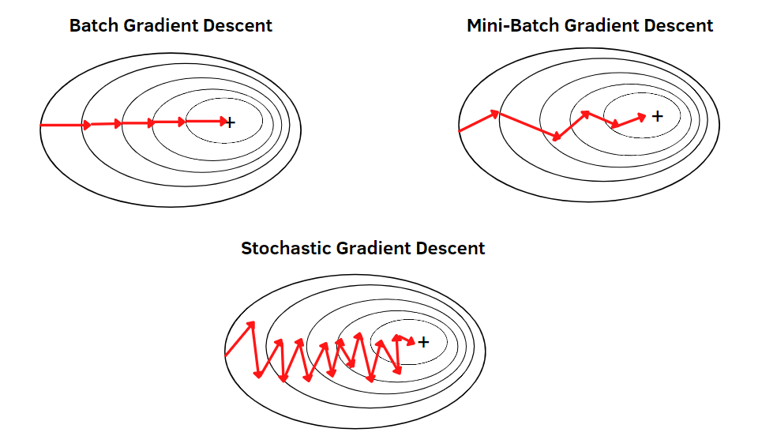Gradient Descent Optimizers
- Improve learning dynamics by modifying how gradients are applied.
- Help avoid local minima, vanishing gradients, and slow convergence.
- Common optimizers:
- Momentum: Uses past gradients to accelerate convergence.
- Adagrad: Adapts the learning rate per parameter.
- Adadelta & RMSProp: Improve Adagrad by reducing aggressive decay.
- Adam: Combines momentum and adaptive learning rates (widely used).
- Nesterov Accelerated Gradient: Improves Momentum with lookahead updates.
Optimizing Training Speed
Training speed can be improved by adjusting key factors that influence convergence.
Weight Initialization: Properly initializing weights helps prevent vanishing or exploding gradients, leading to faster convergence.
Adjusting Learning Rate: A well-tuned learning rate accelerates training while avoiding instability or slow convergence.
Using Efficient Cost Functions: Choosing an appropriate loss function (e.g., cross-entropy for classification) speeds up gradient updates.
Optimizing to Avoid Overfitting
Overfitting occurs when a model learns noise instead of general patterns. Common strategies to prevent it include:
L2 Regularization: Penalizes large weights to reduce model complexity and improve generalization.
Early Stopping: Stops training when validation loss starts increasing, preventing unnecessary overfitting.
Dropout: Randomly disables neurons during training to make the model more robust.
Data Augmentation: Expands the training set by applying transformations (e.g., rotations, scaling) to improve generalization.
Techniques to Improve Training
| Techniques | Performance Improvement | Learning Speed | Overfitting | Description |
|---|---|---|---|---|
| Network Architecture | X | X | X | Adjust layers, neurons andconnections |
| Epochs, Iterations, and Batch Size | X | Controls updates per epoch to improve efficiency. | ||
| Softmax | X | Turns outputs into probabilities | ||
| Training Algorithms | X | X | GD Improvements | |
| Learning Rate | X | X | Step size in gradient updates. | |
| Cross-Entropy Loss | X | Optimized for classification | ||
| L2 Regularization | X | X | Penalizes large weights to prevent overfitting. | |
| Early Stopping | X | Stops training when validation loss worsens. | ||
| Dropout | X | X | Randomly disables neurons to enhance generalization. | |
| Data Augmentation | X | Expands training data by applying transformations. |
Python ANN example
The presentation Introduction to Neural Networks contains an introduction to ANNs with a detailed example on how to implement an ANN from scratch using Python.
Lab Lab-C3.1-IrisANN.ipynb contains the Python notebook required to run the example.
An example using R
A predictive ANN
We use the neuralnet package to build a simple neural network to predict if a type of stock pays dividends or not.
Data for the example
And use the dividendinfo.csv dataset from https://github.com/MGCodesandStats/datasets
mydata <- read.csv("https://raw.githubusercontent.com/MGCodesandStats/datasets/master/dividendinfo.csv")
str(mydata)'data.frame': 200 obs. of 6 variables:
$ dividend : int 0 1 1 0 1 1 1 0 1 1 ...
$ fcfps : num 2.75 4.96 2.78 0.43 2.94 3.9 1.09 2.32 2.5 4.46 ...
$ earnings_growth: num -19.25 0.83 1.09 12.97 2.44 ...
$ de : num 1.11 1.09 0.19 1.7 1.83 0.46 2.32 3.34 3.15 3.33 ...
$ mcap : int 545 630 562 388 684 621 656 351 658 330 ...
$ current_ratio : num 0.924 1.469 1.976 1.942 2.487 ...Data pre-processing
Test and training sets
Finally we break our data in a test and a training set:
Training a neural network
We train a simple NN with two hidden layers, with 4 and 2 neurons respectively.
Network plot
The output of the procedure is a neural network with estimated weights
Predictions
temp_test <- subset(testset, select =
c("fcfps","earnings_growth",
"de", "mcap", "current_ratio"))
nn.results <- compute(nn, temp_test)
results <- data.frame(actual =
testset$dividend,
prediction = nn.results$net.result)
head(results) actual prediction
9 1 0.9919213885
19 1 0.9769206123
22 0 0.0002187144
26 0 0.6093330933
27 1 0.7454164893
29 1 0.9515431416